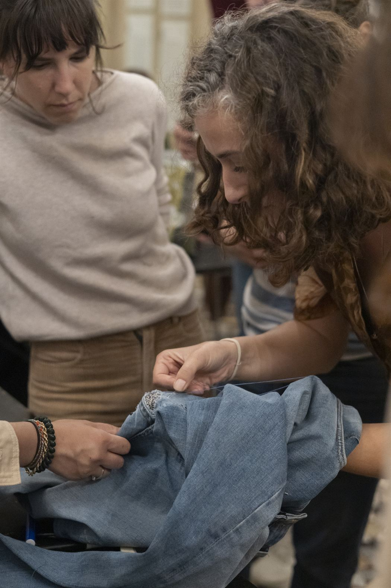
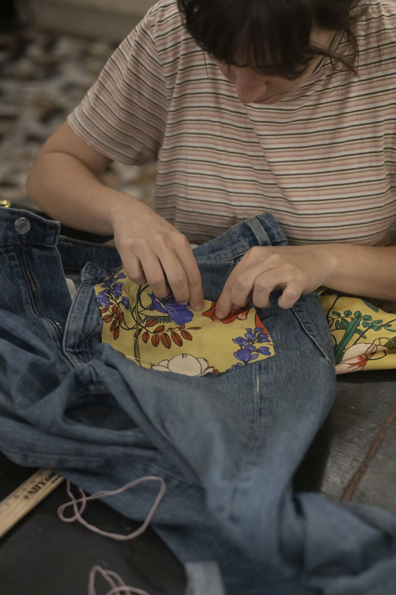

Team building aziendale: un laboratorio di cucito e riciclo
Mezza giornata con le mani occupate e il telefono in tasca. Il vostro gruppo taglia e cuce a mano un oggetto finito, con tessuti di recupero o con i campionari della vostra azienda. Non serve saper cucire: alla fine ognuno porta a casa quello che ha fatto.
- Duratamezza giornata o una giornata
- Per chigruppi di lavoro, anche senza nessuna esperienza
- Materialicompresi, li porto io

Come si svolge l'attività di team building
Il racconto
Da dove vengono i tessuti, quanto ne buttiamo, cosa diventano. Se lavoriamo con i vostri campionari, parto da quelli: cosa sono, quanto valgono, dove finiscono.
Le mani
Si scelgono i tessuti, si taglia, si impara il punto che serve e si cuce a mano un oggetto: una bustina, un sacchetto, un porta oggetti per la scrivania.
Il risultato
Ognuno porta a casa il suo pezzo. Il gruppo ha lavorato insieme su una cosa concreta, con un ritmo diverso da quello dell'ufficio.
Le mani occupate aprono le conversazioni
Da più di dieci anni tengo laboratori di cucito e riciclo in scuole, teatri, festival e associazioni, in Sicilia, a Bologna e in Senegal. Ho visto succedere sempre la stessa cosa: quando le mani lavorano, le persone si parlano in un modo diverso. Chi è più bravo aiuta chi è in difficoltà, e alla fine tutti hanno fatto qualcosa che prima non sapevano fare.
Dove ho tenuto i miei laboratori →

Sono Greta Naselli
Sono artista del tessile e insegnante di sartoria zero waste. Ho fondato Repunto, sartoria rigenerativa che lavora soprattutto con i campionari di tappezzeria che le aziende dismettono. Dal 2022 tengo il laboratorio «Upcycling: moda, teatro, sostenibilità» al Teatro Duse di Bologna.
Cosa faccio con i campionari delle aziende →Prima di scrivermi
Bisogna saper cucire?
No. Il laboratorio è pensato per chi non ha mai preso in mano un ago. Si cuce solo a mano, niente macchine.
Quante persone possono partecipare?
Per seguire bene ognuno, fino a dieci persone per volta. Con gruppi più grandi si fanno più turni nella stessa giornata.
Dove si fa?
Nella vostra sede, in una sala con dei tavoli: in Sicilia, a Milano, a Roma e in tutta Italia. Fuori dalla Sicilia viaggio e alloggio sono a vostro carico.
Possiamo usare i nostri tessuti?
Sì, ed è la versione che consiglio alle aziende tessili e di arredamento: il gruppo lavora con quello che l'azienda produce, e i campionari dismessi trovano un uso.
Quanto costa?
Dipende da quante persone siete, dalla durata e da dove ci troviamo. Vi mando un preventivo con i materiali già compresi.